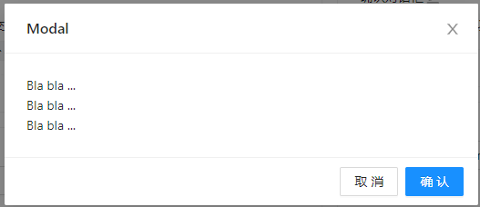
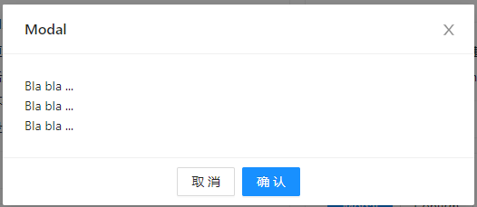

实际开发中的一个痛点：

开发中使用的UI组件一般dom的结构顺序是固定的，当我们要使用一套组件的时候，会在原来的基础上做些调整，但大部分样式与组件本来样式区别不大，足以很顺畅的使用起来，但偏偏设计师会提出一些比较头疼的意见，比如说让这里的确定和取消两个按钮换个位置。
我们首先想到的给取消按钮设置float: right就能实现了
但，要是像按钮居中的情况下呢？

这个时候给按钮设置float: right，它只会飞向容器的右侧，无法居中了
在开发中很多时候经常会遇到这样的小痛点，可能会捉急使用一些成本比较大的方式去解决。但如果对一些比较冷门的属性比较熟悉，发现这些冷门的属性刚好就能完美的解决掉这些痛点
实际上解决这个小的痛点有个非常简单的方法，就是direction: rtl
语法:
direction: ltr; left-to-right，从左到右，默认值
direction: rtl; right-to-left，从右到左